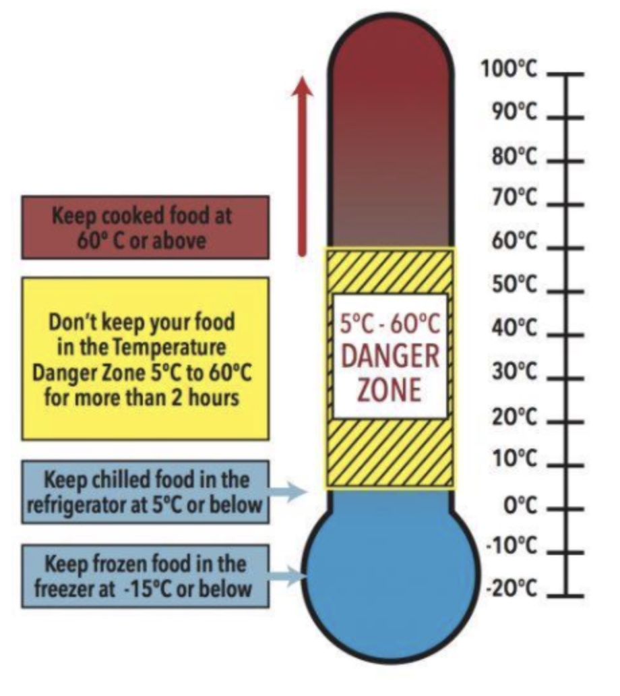
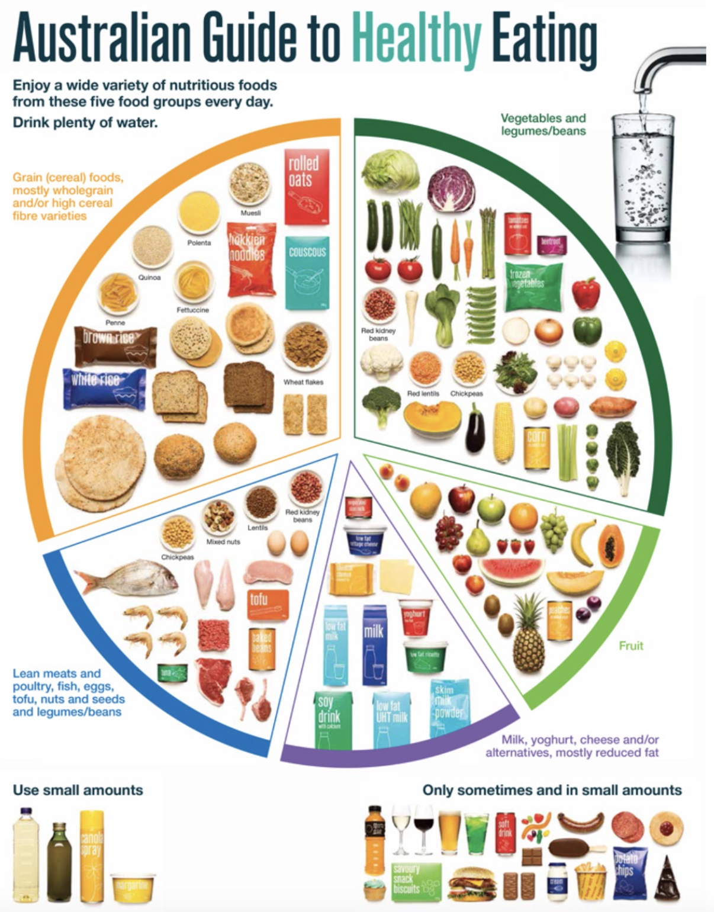
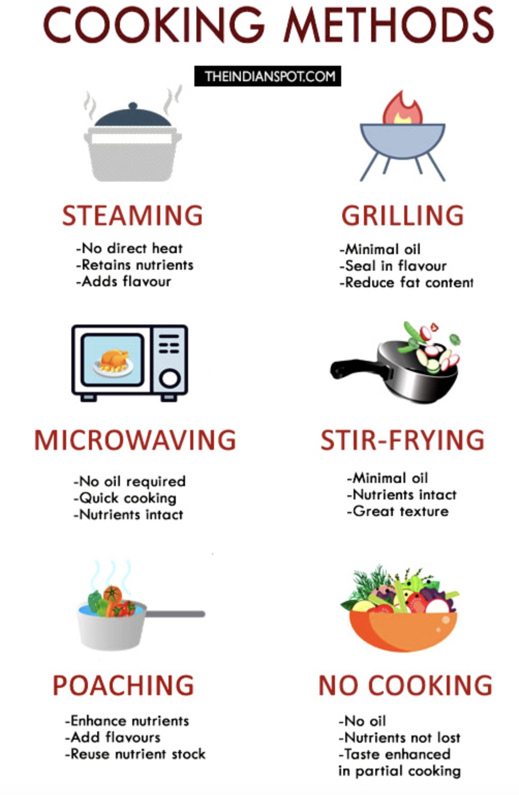

A hazard is any source of potential damage, harm or adverse health effects on something or someone.
Here are the top 10 injuries you’ll want to avoid which plague commercial kitchens, they are:
- Knife cuts
- Burn hazards
-Injury from machines Slips, trips and falls
- Lifting injuries Head & eye Injuries
- Crowded workspace risks
-Chemical hazards
-Fire hazards
-Electric shock
It is important to maintain high standards of food safety and hygiene in every practical. Failure to do so may lead to CONTAMINATION, which leads to FOOD POISONING!
The Danger Zone establishes limmitations on temperatures whens storing, heating and cooking food. Use the following websites and further research to help answer the questions
https://www.healthline.com/health/food-poisoning#:~:text=Foodborne%20illness%2C%20more%20commonly%20referred,food%20poisoning%20isn't%20unusual.
https://www.bbc.co.uk/bitesize/guides/z77v3k7/revision/1#:~:text=Moisture%20%E2%80%93%20Bacteria%20need%20moisture%20in,nutrients%20for%20bacteria%20to%20grow.
https://www.webmd.com/food-recipes/default.htm
- Using the help above and additional research; complete the questions on pages 12-14
- Create a poster to explain how people could get food poisoning and how to avoid it
Learning Intention: To understand safe and hygienic processes to apply in the MasterChef Assignment!
Success criteria Can define the danger zone Can describe the correct temperature to store, heat and cook different types of food
Fact Sheet on types of Bush Foods found in Australia: https://anfab.org.au/main.asp?_=Fact%20Sheets
- Complete the questions on pages 19-20
- Pick three bush tucker foods, thoroughly read the three that you've chosen.
- Then create a presentation to explain about the food and some interesting information and facts.
Learning Intention: To be able to use native bush foods in a range of recipes
Success criteria: Can identify and describe a range of bush foods used in Australian cuisine
Can explain the cultural importance of using bushfoods for Indigenous Australians
Can describe appropriate substitutions for European ingredients using bushfoods
Is this you?
Feeling that you don't have much energy...
Tired a lot of the time...
Do you think you eat enough food...
Do you eat the right types of food ...
Have a look at the guide to healthy eating below and see how you fit into it with what you eat...
In your workbook:
Create a mind map that shows all the information you already know about Nutrients and Nutrition.
Complete the mind map on page 21. Try and add as many things as you know first, then use the internet/teacher guidance to ensure there are 10 pieces of information
Use the guide to healthy eating above. List the foods that you eat at the bottom of page 21, how could you adapt your diet to fit in better with the guidelines and perhaps follow it to see if it gives you more energy
Learning Intention: Be able to identify foods using the Five Food Groups guide
Success criteria: Can list examples of foods in the 5 food groups
Can explain the nutritional value of each food group
Not all methods of cookery are the same. Some methods of cookery retain water soluble vitamins, others retain fat soluble. Some recipes add extra unnecessary calories which can cause health problems and weight gain. Other recipes contain ingredients high in salt, sugar, fat and cholesterol.
Healthier methods of cookery - these are usually methods of cookery that do not require cooking in fat or oil (listed below)

Complete the table on page 41
Learning Intention: Students will know about the various methods of cooking food
Success criteria: Using the internet (and teacher as a resource) complete the table with all the information of the various ways that we cook food. Complete all of the information on the 'Methods of Cookery' in booklet Page 41. Students will know about the various methods of cooking food.